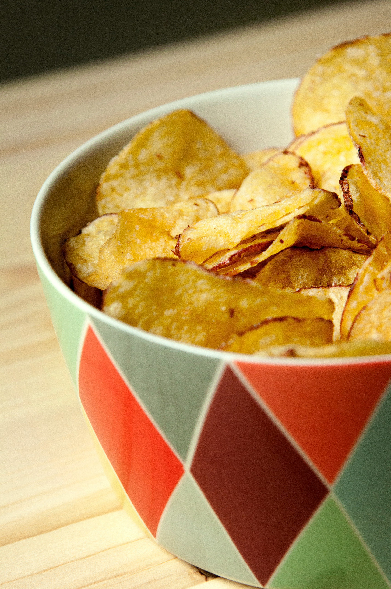

Crispy Potato Chips
Homemade crispy potato chips that are a perfect snack for any occasion!
Ingredients:
- 4 medium potatoes, thinly sliced
- 2 tablespoons olive oil
- Salt to taste
- Optional: paprika or garlic powder for extra flavor
Instructions:
- Preheat the oven to 400°F (200°C).
- Thinly slice the potatoes using a mandoline or sharp knife.
- Toss the potato slices in olive oil and season with salt.
- Spread the potato slices in a single layer on a baking sheet.
- Bake for 15-20 minutes, flipping halfway through, until golden and crispy.
- Allow to cool and enjoy! Back to Snacks Recipes